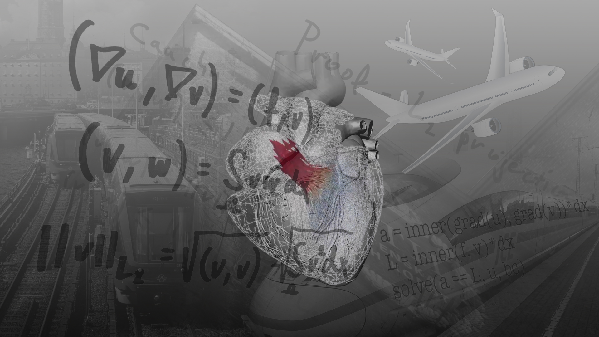

I started my research career from control of diffusion phenomenon on manifolds, after PhD I worked on Total variation flow (applications in Nanodevices), and CFD flow with an application to Image denoising and Aerodynamics respectively. Currently I am involved in combining Computer Vision, TVF flow, CFD flow and AI for healthcare applications. In broader perspective, I like and try to solve problems (developing theories, models and writing codes) using the ideas from Computational Mathematics and Physics.
Horizon-2020
mooc-hpfem
BIKAINTEK PROJECT(FlowPh:2019-2021) and P4Vd-PDC(2022-Current)
MSO4SC(Horizon-2020(2018-2019)), MOOC-HPFEM(2018-2019)
Molecular&Functional Biomarkers headed by Jesus Ruiz Cabello
Computational Fluid Dynamics and Computational Technology headed by Johan Janssson
Numerical and Scientific Computing supervised by Roland Glowinski and Ronald H.W Hoppe
Computational Fluid Dynamics: Modeling and Simulations headed by Marco Ellero